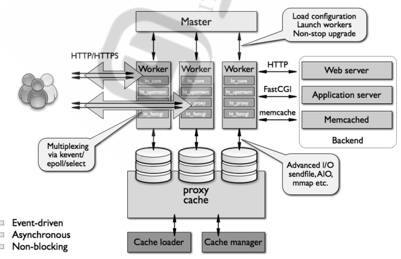
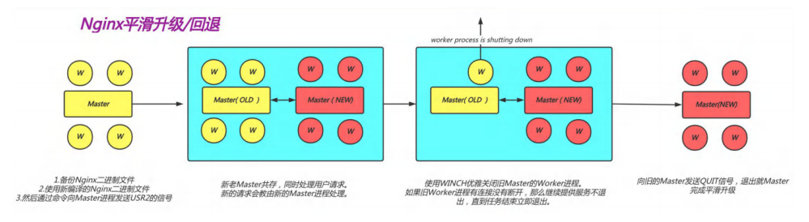
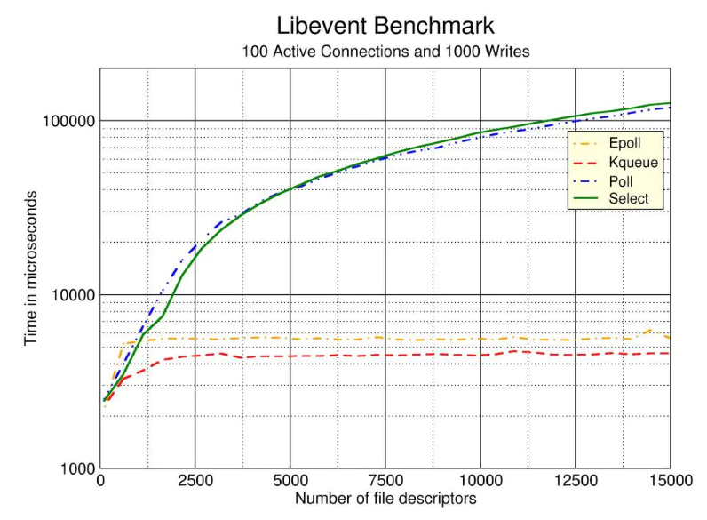

本文主要介绍了Nginx基础原理和编译安装。
Nginx基础原理 Nginx进程结构 Nginx是多进程组织模型，而且是一个由Master主进程和Worker工作进程组成。
master进程的功能包括：接收外部的操作并对内转发，通过信号管理 Worker进程。监控 worker 进程的运行状态，worker 进程异常终止后，自动重启 worker 进程。读取Nginx 配置文件并验证其有效性和正确性。建立、绑定和关闭socket连接，按照配置生成、管理和结束工作进程。编译和处理perl脚本。
worker进程的功能包括：实际负责处理网络请求，接受处理客户端请求并依次送入各个功能模块进行处理
I/O调用，获取响应数据。与后端服务器通信，接收后端服务器的处理结果。缓存数据，访问缓存索引，查询和调用缓存数据。发送请求结果，响应客户的请求。接收主程序指令，比如重启、升级和退出等。

 Nginx高性能原理 Nginx采用高性能事件驱动模型epoll：
epoll的处理方式是创建一个待处理的事件列表，然后把这个列表发给内核，返回的时候在去轮询检查这个表，以判断事件是否发生，epoll支持一个进程打开的最大事件描述符的上限是系统可以打开的文件的最大数，同时epoll库的I/O效率不随描述符数目增加而线性下降，因为它只会对内核上报的“活跃”的描述符进行操作。

Nginx采用零拷贝技术：
传统的 Linux 系统的标准 I/O 接口（read、write）是基于数据拷贝的，这样做的好处是，通过中间缓存的机制，减少磁盘 I/O 的操作，但是坏处也很明显，大量数据的拷贝，用户态和内核态的频繁切换，会消耗大量的 CPU 资源，严重影响数据传输的性能。
零拷贝就是上述问题的一个解决方案，通过尽量避免拷贝操作来缓解 CPU 的压力。零拷贝并没有真正做
到“0”拷贝，它更多是一种思想，很多的零拷贝技术都是基于这个思想去做的优化。
Nginx特性
模块化设计，较好的扩展性
高可靠性
支持热部署：不停机更新配置文件，平滑升级版本，更换日志文件
低内存消耗：10000个keep-alive连接模式下的非活动连接，仅需2.5M内存
既可提供web服务又能实现四层或七层代理
使用nginx官方yum源安装 系统自带的nginx版本较旧，可先配置nginx官方提供的yum源。
以下链接中详细描述了几个主要linux发行版系统的仓库配置方法。
http://nginx.org/en/linux_packages.html
1 2 3 4 5 6 7 8 9 10 11 12 13 14 15 16 17 18 19 20 21 22 23 24 25 26 27 28 # 官网关于RHEL/CentOS部分介绍 # Install the prerequisites: # To set up the yum repository, create the file named /etc/yum.repos.d/nginx.repo with the following contents: # By default, the repository for stable nginx packages is used. If you would like to use mainline nginx packages, run the following command : # To install nginx, run the following command : # When prompted to accept the GPG key, verify that the fingerprint matches 573B FD6B 3D8F BC64 1079 A6AB ABF5 BD82 7BD9 BF62, and if so, accept it.
选择特定旧版本安装 yum list只列出了最新稳定版本的nginx相关包，但也可直接安装旧版本
1 2 3 4 5 6 7 8 9 10 11 yum list *nginx*Available Packagesnginx -module-image-filter.x86_64 1 :1 .22 .0 -1 .el8.ngx nginx-stablenginx -module-image-filter-debuginfo.x86_64 1 :1 .22 .0 -1 .el8.ngx nginx-stablenginx -module-njs.x86_64 1 :1 .22 .0 +0 .7 .6 -1 .el8.ngx nginx-stablenginx -module-njs-debuginfo.x86_64 1 :1 .22 .0 +0 .7 .6 -1 .el8.ngx nginx-stablenginx -module-perl.x86_64 1 :1 .22 .0 -1 .el8.ngx nginx-stablenginx -module-perl-debuginfo.x86_64 1 :1 .22 .0 -1 .el8.ngx nginx-stablenginx -module-xslt.x86_64 1 :1 .22 .0 -1 .el8.ngx nginx-stablenginx -module-xslt-debuginfo.x86_64 1 :1 .22 .0 -1 .el8.ngx nginx-stable
如选择nginx1.18.0
1 yum -y install nginx-1 .18 .0
Nginx编译安装 准备环境 需要预先安装的软件： gcc pcre-devel openssl-devel zlib-devel
源码包官方地址：https://nginx.org/en/download.html
选择模块 1 2 3 4 5 6 7 8 9 10 ./configure --prefix= 安装路径 \ --with- 模块名--with-http_v2_module \ --with-http_ssl_module \... --add-module= 模块源码路径--add-module=/usr/local/src/echo-nginx-module ...
安装 执行make && make install
修改安装目录文件夹所属者为nginx
安装目录中有四个主要文件夹：conf保存nginx所有的配置文件，其中nginx.conf是nginx服务器的最核心最主要的配置文件，其中有后缀.default的样板配置文件。html目录中保存了nginx服务器的web文件，但是可以更改为其他目录保存web文件,另外还有一个50x的web文件是默认的错误页面提示页面。logs用来保存nginx服务器的访问日志错误日志等日志。sbin保存nginx二进制启动脚本，可以接受不同的参数以实现不同的功能。
nginx -V可查看当前nginx版本和带有的模块，日后想添加新模块可在编译安装时直接复制当前模块再加上新模块。
创建service文件 便于开机启动和使用systemd管理
1 2 3 4 5 6 7 8 9 10 11 12 13 14 15 16 17 18 19 20 21 22 # 可复制同一版本的nginx的yum安装生成的service文件，较新版本的yum安装需要先配置官方源，官网同上。 # service文件如下 # 修改配置文件，方便查看nginx进程编号